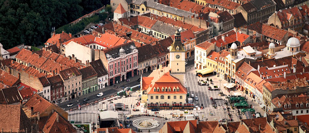
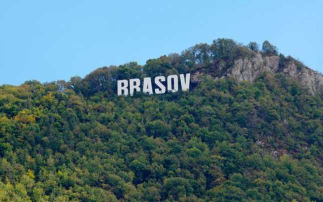

Biserica Neagră is 89 meters in length and 38 meters wide. It measures 65 meters from the floor level to the highest point of its only bell tower. The Black Church has a six-ton bell, the biggest in Romania, an impressive 4,000 pipe organ built in 1839 by Carl August Buchholz (1796–1884) which is played during weekly concerts, as well as a rich collection of "Transylvanian" rugs donated from the 15th to 17th centuries by Transylvanian Saxon merchants, some of which have been used to decorate walls as well as floors after the Reformation. Much of the outside structure was built in friable grit, which caused outer sculptures and masonry elements to deteriorate with time. The oldest features surviving include several sculptures, arches, simpler masonry patterns such as trilobes, as well as numerous portals, while the crowning is imitation Gothic dating from the 18th century. The oldest sculpture appears to be the almost completely deteriorated bust of John the Baptist, located in the choir section, reflects the Bohemian Gothic art as seen in the works of Johann and Peter Parler.
2. Council Square
Brasov's showpiece Piata Sfatului (Council Square), known to the Saxon population as the Marktplatz, is one of the most beautiful main squares of Romania. Fully pedestrianised, the square was refurbished a couple of years ago. It has never looked better. All around the square are sturdy houses with high lofts for storing goods, though few - if any - are still lived in. In the middle of the square is the Old City Hall, dating from 1420. Elsewhere in Piata Sfatului you will find a number of places to eat and drink (all of which have terraces in summer), and the startling Romanian Orthodox Cathedral at No. 3. The square hosts the Carpathian Stag Music Festival (once the city's biggest annual event, but now held infrequently) and there is usually some kind of craft market too. No bargains, but plenty of good souvenir fodder.
3. First Romania School
The First Romanian School is located on the grounds of the 16th-century church of St. Nicholas, itself located in the historic district of Șcheii Brașovului, in what is now Brașov, Romania. This is the first school in the territory of present-day Romania where Romanian language was used in teaching. The school remained in use until 1850, when Andrei Șaguna College was opened. The collections of archaic and original items were gathered starting in 1933 and were first organized in a museum in 1964. It houses a variety of early Slavic and Romanian books, the first Romanian Bible, and what can be loosely described as the first school magazine. The library contains six thousand books which were used in the school. The museum also contains the first Romanian printing press. Only 39 books were made by this press, which is hardly surprising given the labour required, however the work it did produce included plenty more firsts. The first Romanian letter in Latin was produced by the press, the first Romanian schoolbook and the first Bible, which was printed on goatskin and had a cover weighing a hefty seven kilograms.
4. Tampa Mountain
Tâmpa is a mountain, part of the Postăvarul Massif, located in the southern part of the Eastern Carpathians (alternatively categorized as in the Curvature Carpathians) and almost entirely surrounded by the city of Braşov. Its elevation is 960 m, almost 400 m above the city.
Most of the mountain is a declared nature reserve, due to the rare animal species (bears, birds, butterflies—35% of Romanian butterfly species) and plant species (a rare Liverleaf variety, Transylvanian Windgrass) that are found there. A number of routes to the summit exist: there are 25 winding paths cut in 1837 by Brașov's forest administration; Gabony's stairs; the Knights' road, dating to the days of the Brașovia citadel; and an auto road. A cable car makes the journey between the cabin/restaurant Casa Pădurarului at the base of the mountain to the Restaurantul Panoramic, on its crest, in under three minutes. The view from the summit is spectacular, offering a panoramic view of the city; on a clear day, the entire Burzenland is visible.
 
<-------------------------- Council Square
Belvedere sign from Tampa Mountain ------------------->